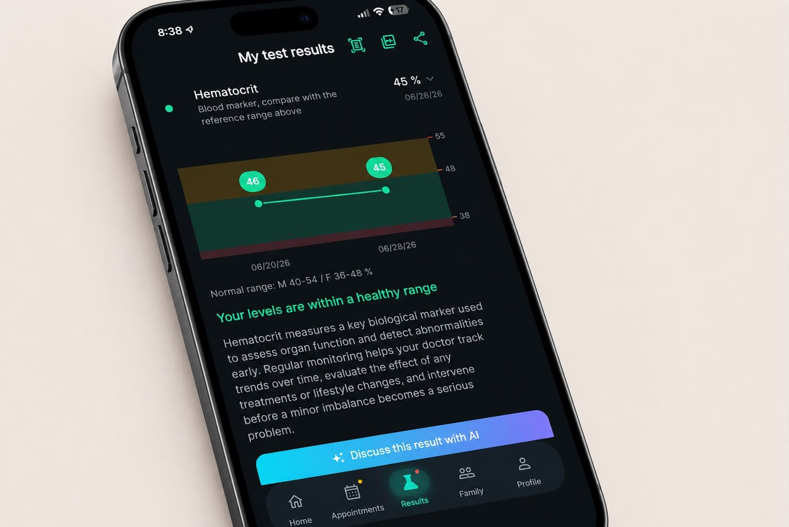
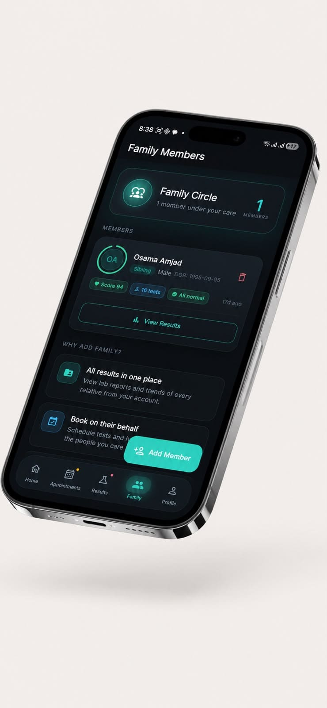

50+ blood-test packages, booked at your lab or your door, with every result explained in plain English by AI. For you, and your whole family.
Most people leave the lab with a printout full of arrows and acronyms, and no idea what it means for them. PulsingLabs turns those numbers into clear, personal answers, and helps you act on them in time.
Every marker sits on a clinical zone chart (Normal, Borderline, or High), tuned to your age and sex, with a plain-English explanation underneath.

Chat about your results like you would with a calm, knowledgeable friend, in English or اردو, and let it book your next test right inside the conversation.
Every result you take maps onto a holographic body inside the app. Spin it, tap an organ, and see its live condition scored from your own blood work.
"I used to file my lab reports away and just hope for the best. PulsingLabs explained every number in plain language and flagged my rising sugar before it became a problem. For the first time, I actually understand my own health, and my family's."
Add parents, kids and your spouse, and bring in old reports from any lab by snapping a photo, so every result, past and present, lives on one timeline.

Book a home visit and a certified phlebotomist collects your sample at your door, at a time that suits you. Same accredited labs, same results in-app, zero travel.
Browse 50+ curated blood-test packages, or scan an existing report to import it.
Select a partner lab or home collection, then a slot that works for you.
Results arrive in-app with charts, trends, and AI explanations you understand.
Diabetes, high cholesterol and thyroid disorders develop silently for years. Early screening changes the outcome. PulsingLabs makes it effortless.
* Industry estimates, figures vary by region.
From your own numbers to your whole family's, every result explained, tracked, and within reach.